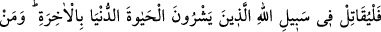

alıp cihaddan geri kalmak âyetin devâmındaki “keşke onlarla birlikte olsaydım”
ifâdesine daha uygundur. Hülâsa, ağır davrananlardan maksat, ordudaki münâfıklardır.
Çünkü onlar savaşıyormuş gibi görünen, nifak çıkarmak için savaşa giden kimselerdi.
“Eğer size bir felâket erişse” size düşmanlarınızdan ölüm yâhut yenilgi gibi bir bela
gelse bu ağır davrananlar yaptıklarına sevinerek ve Rab’lerine hamdederek “Allah
bana” savaşa katılmayıp geride kalmam sebebiyle “lütfetti de onlarla berâber”
savaşta “bulunmadım.” Yoksa onların başına gelen benim başıma da gelecekti “der.”
73- Eğer Allah’tan size bir lütuf erişirse –sanki sizinle onun arasında (zahirî) bir
dostluk yokmuş gibi- «Keşke onlarla berâber olsaydım da ben de büyük bir başarı
kazansaydım!» der.
“Eğer Allah’tan size” fetih ve ganîmet gibi “bir lütuf erişse” savaştan geri kalıp
evde oturduklarına pişman olarak, dünyâ malı için yırtınarak ve onu kaçırdığı için
üzülerek sanki “sizinle onun arasında (zâhirî) bir dostluk yokmuş gibi” kavmine
hitabederek “Ey kavmim “keşke” bu savaşta “onlarla berâber olsaydım da ben de
büyük bir başarı kazansaydım!” elde edilen ganîmetten büyük bir pay alsaydım, “der.”
Münâfıkların mü’minlerle berâber olmak istemeyişlerinin sebebi, onlara aralarındaki
dostluğun gereği olarak yardım edip arka çıkmak değil, bilakis âyetin son kısmında da
ifâde edildiği üzere mal hırsından kaynaklanmaktadır.
Mü’minlerle münâfıklar arasında dostluk olduğunun ifâde edilmesi, gerçekten değil,
alay etmek maksadıyladır.
74- O halde, dünya hayatını âhiret karşılığında satanlar, Allah yolunda
savaşsınlar. Kim Allah yolunda savaşır da öldürülür veya galip gelirse biz ona
yakında büyük bir mükâfât vereceğiz.
“O halde, dünya hayâtını âhiret karşılığında satanlar”, dünyâyı satıp bedelinde
âhireti alan mü’minler “Allah yolunda savaşsınlar.” Şayet o münâfıklar ağırdan alsalar
da canlarını âhiret için fedâ eden ihlaslı kimseler Allah yolunda savaşsınlar. Bir başka
mânâya göre dünyâyı satın alıp onu âhirete tercih ederek ağırdan alanlar, savaştan geri
kalma hallerini bırakıp Allah yolunda savaşsınlar, demektir. “Kim Allah yolunda